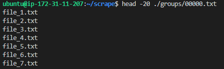

from my archived blog blog.gigashock.com. reposted here.


twitter.com/stephenkrings
email: stephen <at> gigashock *dot* com
email: stephen <at> gigashock *dot* com
Why
There are 1440 minutes in a day and I don't like waiting.
10,000 inserts per minute isn't that impressive for a database. All databases can be easily optimized to perform at such speeds. In this case, however, I had a simple Python script that I needed to run many, many times over and a way to keep track of which data I had retrieved and which data I had not.
It's important to note that I had permission to make these requests to the remote server. Making this many parallel requests to a remote server without permission could cause Denial-of-Service to the unsuspecting host.
The Problem
I have a remote server with 2 million individual text files. Each text file has information that needs to be extracted and inserted into a database table.
I could not for the life of me get MySQL + Python to get me more than a few hundred inserts per minute.
Initially, I wrote a Python script to open each remote text file, extract the data and insert it directly into a SQL table. Despite decent hardware on the database server (128GB of RAM, 8 core, 16 thread 3.7GHz processor), I was bogged down by the volume of inserts required for this task.
Old Script

Rather than waiting 4 days for the task to complete with a single for-loop, I decided to take a different approach:
1. Minimize MySQL's role
2. Allow for the script to be run many times in parallel
The New Script (here)

The main issue, I suspect, was that the first script I wrote was only running a single loop through the 2 million text files and could not be efficiently run many times at once because it would have to check the final database table to see if the file contents had already been entered by another script.
The solution to this in the new script was to track progress in a queuing table in MySQL to keep track of which files had already been retrieved.
The following tutorial goes through the process of creating the new script from start to finish.
Retrieving the data, saving to disk and running this script many times in parallel allows for a decently high throughput. The bottle neck was no longer MySQL and the single Python for loop, but the network bandwidth of the server hosting the 2 million files and the RAM/CPU of the computer I was making the requests from.
If you're creative, this method could be applied a number of ways to projects that require a high number of "download + insert" actions in one shot.
Overview
- Pull each of the 2 million URLs, save the URL to a single text file with each URL as a new line.
- Split the list of 2 million URLs into grouped text files of 250 lines each (2 million URLs / 250 URLs = 8,000 groups). We'll call these the "group files".
- Create a "queue" table in MySQL to store the grouped file filenames.
- Create a Python script to query a list of URLs in a single group file, saving the contents of each request to disk.
- Track the status of each grouped file in MySQL.
- Randomize group file queuing to avoid collisions.
- Run as many of the retriever scripts as your hardware can handle.
- Combined the output files.
- Upload your 2 million results directly to MySQL using LOAD DATA INFILE.
Tutorial
Pull each of the 2 million URLs which point to the 2 million text files and save the URLs to a single text file. I'm not saving the file itself just yet, just the URL of the text file.
Here is the command to pull the filenames located in the remote directory:
curl -v -u "user:password" https://domain.com/data/crime_data/split/ | grep -o 'href="file*.*">' | sed 's/href="//;s/\/">//;s/\.[^.]*$//;s/\.txt.*/.txt/ > filenames.txt
###
Explanation
Explanation
curl -v -u
Curl verbose (-v) with a username and password (u).
"user:password" The username and password
https://domain.com/data/crime_data/split/ Destination of the web directory containing the 2 million files.
grep -o 'href="file*.*">'Grep the page contents for the filename links, print only the matched (-o). I happen to know each filename starts with the word "file" in this case.
sed 's/href="//;s/\/">//;s/\.[^.]*$//;s/\.txt.*/.txt/Use sed to remove the unwanted HTML elements. I happen to know each file is a .txt file here.
> filenames.txtOutput to filenames.txt
####
Count the lines in this file to check that the number of filenames is as expected.
$ wc -l filenames.txt
2230144 filenames.txtSplit filenames.txt into ~8,000 files of 250 lines each.
$ mkdir groups$ split -d -a5 -l 250 --additional-suffix=.txt filenames.txt ./groups/###
Explanation
split -d -a5 --additional-suffix=.txtUse numeric suffixes starting at 0 (-d) with a 5 digit suffix (-a5),
250 lines (-l) and an additional suffix to file names (--additional-suffix=.txt)###
Check the group directory.
Check the group directory.
$ ls ./groups/head -20The group directory contains a list of the group filenames.
If you open one of the group files, it will contain a list of 250 filenames.
$ head -20 ./groups/00000.txt
Login to MySQL to create the queue table to keep track of the groups.
mysql> create database queue;Query OK, 1 row affected (0.00 sec)mysql> use queue;Database changedmysql> CREATE TABLE group_name(filename VARCHAR(100) NOT NULL,status VARCHAR(100) NOT NULL DEFAULT '0');mysql> exitBye
Export filenames from the group directory to a .csv file
$ cd ..$ find ./groups -type f -printf "%f\n"> groupnames.csvEnable local-infile in MySQL
$ sudo vim /etc/mysql/mysql.conf.d/mysqld.cnf[mysqld]
local-infile
$ sudo service mysql restartUpload groupnames.csv to MySQL
$ mysql --host=127.0.0.1 --local-infile=1 -D queue -e "LOAD DATA LOCAL INFILE './groupnames.csv' INTO TABLE group_name FIELDS TERMINATED BY ',' (filename)" -u user -pmysql> select * from group_name LIMIT 10;+-----------+--------+| filename | status |+-----------+--------+| 05818.txt | 0 || 04080.txt | 0 || 02782.txt | 0 || 01491.txt | 0 || 03464.txt | 0 || 05001.txt | 0 || 00838.txt | 0 || 02670.txt | 0 || 08744.txt | 0 || 02332.txt | 0 |+-----------+--------+10 rows in set (0.00 sec)mysql>
mysql> select count(*) from group_name;
+----------+
| count(*) |
+----------+
| 8921 |
+----------+
1 row in set (0.03 sec)
mysql>
Now I have a list of the 8,921 “grouped” filenames in MySQL.
The Python below script will iterate through each of the 2 million files, one group at a time and extract the information I need from each of the 2 million text files and save this information on disk. Once the script is done, the newly sorted 2 million lined file can be uploaded to MySQL using LOAD DATA INFILE.
Edit /etc/mysql/mysql.conf.d to increase the number of connections to your MySQL database.
Add the following line to mysql.conf.d:
$ max_connections = 100000Create an output directory for the output files.
$ mkdir /home/ubuntu/scrape/outputThis is the Python script for retrieving the 2 million files:
You can run the script many times at once with the following bash script. This is a quick and dirty method for doing so.
$ vim run_many.sh#!/bin/shpython pull.py & disownsleep 2python pull.py & disownsleep 2python pull.py & disownpython pull.py & disownpython pull.py & disownpython pull.py & disownpython pull.py & disownpython pull.py & disownpython pull.py & disownpython pull.py & disownpython pull.py & disownpython pull.py & disownpython pull.py & disown…
…
Add “python pull.py & disown” to run_many.sh as a new line as many times as you want; up to 8,921 times (as many grouped files that exist). The idea here is that this Python script runs on one “group” at a time.
Run it
$ bash_many.shI ran 1,200 pull.py scripts at once and achieved a retrieval rate of about 10,000 files per minute. In about 3 hours, I had gone through each of the 2 million text files and could upload the sorted data I needed to MySQL using LOAD DATA INFILE, which was quite fast:
$ mysql –host=localhost –local-infile=1 -D queue -e “LOAD DATA LOCAL INFILE ‘./merged.csv’ INTO TABLE group_name FIELDS TERMINATED BY ‘,’ (filename)” -u user -p